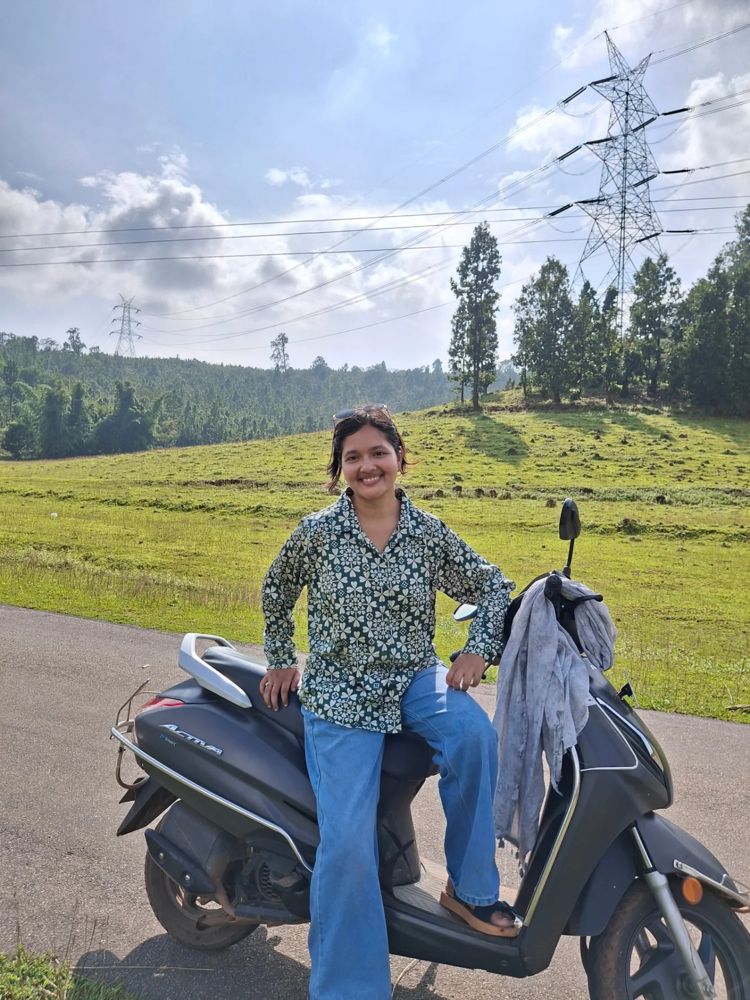
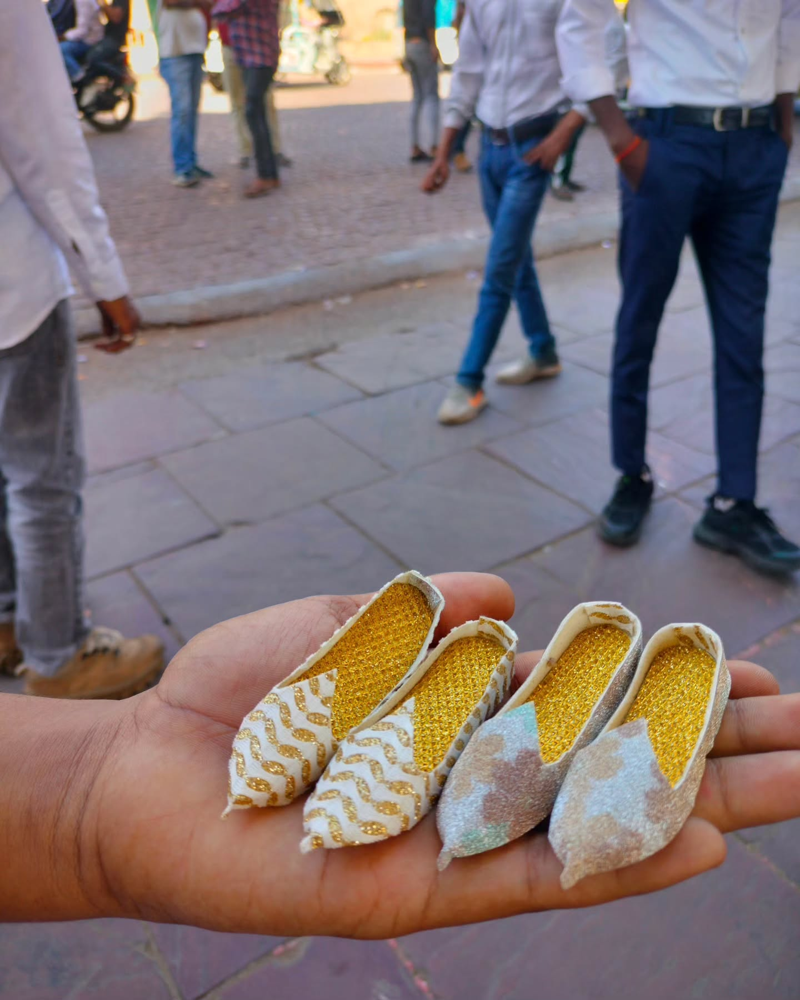
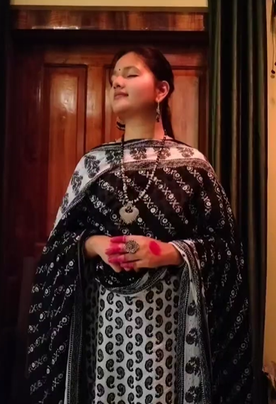

रौशनी बन के फ़िज़ाओ में बिखरना होगा.....
In a world where connections blend,
A friendship formed, a message sent.
Across the digital roads we roam,
A bond as genuine as if near in home.
And then I see you,
Not the world’s version of you,
Or the version of your closed ones,
But the version that only I can see,
I see how your mind works
The way it notices what others miss
The tiny hesitations in someone's step
The unspoken tension in a room
The fleeting sadness someone hides behind a smile
The things that are never said
This speak volumes to those who read
I see your strength
Life has not been gentle with you
The storms you’ve walked through alone
You face moments that would shatter anyone else
You carry your past, without letting it define you
You move forward without needing an applause
Still you managed to endure
Transforming every wound into cure
I see your softness too
The way you care without expectation,
The way you lift others
Even when your own world is heavy,
The courage it takes to give when giving is a burden.
I know how complex you are
Fierce but gentle,
Light but deep,
A library of thoughts the world cannot read.
I see the small things I notice
The tilt of your head when listening,
The tiny nuances in your speech,
The unspoken way your eyes say,
The gestures that are invisible to everyone else,
But they speak your soul in much more detail.
I see the nights you fought yourself
The moments of doubt,
The silent fears,
The question if you were enough,
The question of your own existence,
And still you carried on,
Hold yourself together,
Piece by piece.
I see the effect you have
How your presence can calm,
How your silence can comfort,
How your laughter can shift a world,
Even when you think no one notices.
I see your mystery
The part of you untouchable,
Uncontainable,
Both question and answer,
Chaos and calm, storm and stillness,
Pulling the world into an orbit around you.
And do you know how I feel?
I see you, every layer, every scar,
Every small win, every silence fight,
Every habit, every nuance, every sacrifice,
Every pause, every glance, every unsaid word.
And in seeing you, I am humbled,
I am awed,
I am changed.
For someone as extraordinary as you,
Who has carried so much and still shines,
Cannot help but leave a mark on the soul
Of those who truly notice.
I do not expect words in return,
I do not demand any recognition,
I only hope you feel what I feel,
That ever know.
Dil Tadap Tadap Ke keh Raha Hai
Guzra Hua Zamana Aata Nahin Dobara
Bachpan Ki Muhabbat Ko Dil Se Na Juda Karna
Mujhko Apne Gale Laga Lo
Neee Gagan Ke Tale
Asha Bhosle Songs